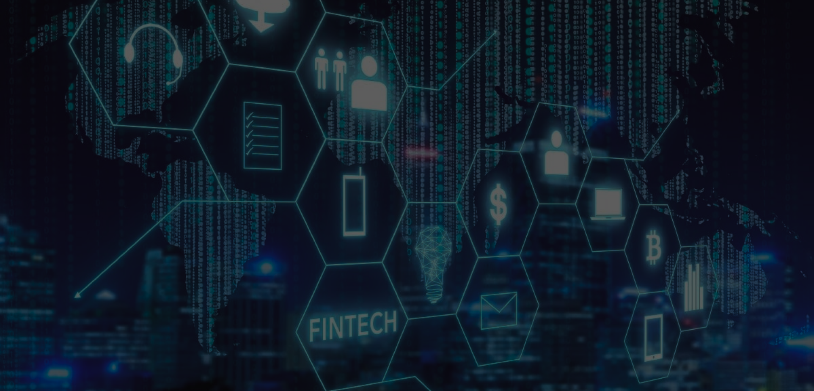

СТАРТ У FINTECH
в IT STEP Університеті
Отримай доступ до знань та навичок у Fintech індустрії,
що дають можливості від управління особистими фінансами до запуску стартапів
Дізнайся, як Fintech змінює світ фінансів за допомогою інновацій -
цифрових банків, блокчейну, віртуальних активів, та DeFi
Реалізуй на практиці поєднання технологій та фінансів через
кейси як інвестувати, переводити, та захищати свої кошти в
епоху діджиталізації
Чому навчання у Fintech School?
- Високий попит і перспективи працевлаштування через швидке зростання ринку, міжнародні можливості як локально, так і віддалено, та можливість працювати в різних напрямах - від розробки ПЗ до маркетингу, аналітики данних, чи управління продуктом
- Високі зарплати. Fintech входить до найбільш високооплачуваних галузей, оскільки поєднує знання, та навички з фінансів і технологій. Середній рівень зарплат у сфері Fintech у 2024 році складав понад 2000 USD на місяць.
- Поєднання фінансів і технологій через мультидисциплінарність, та практичність, зокрема навчання у фінтехі дає змогу одночасно розвивати навички в технологіях (програмування, AI, блокчейн) та фінансах
- Інновації та креативність через можливість створювати нові рішення для реальних проблем робить навчання захопливим і перспективним.
- Можливість працювати у стартапах чи великих компаніях. Стартапи для тих, хто любить гнучкість, інновації та швидке зростання, а корпорації забезпечують стабільність, великі бюджети, розвиток у глобальному масштабі.
- Глобальний масштаб: Fintech відкриває доступ до міжнародного ринку праці та співпраці з провідними компаніями (Stripe, PayPal, Revolut). Універсальність знань: навички фінтеху цінуються в будь-якій країні.
- Можливість власного бізнесу. Fintech освіта дає базу для створення стартапів у сфері фінансів і технологій. Приклади: Monobank, Wise, Kraken — стартапи, засновані ентузіастами фінтеху.
- Соціальний вплив: допомога у створенні доступних фінансових послуг для всіх верств населення (мікрокредитування, цифрові гаманці) забезпечує вплив на економіку та покращення фінансової грамотності людей.
Сучасний фінансовий сектор - це динамічна та розгалужена
галузь, яка зазнала цифрової революції завдяки інтеграції
технологій у реалії нашого життя, що задовольняють різні аспекти фінансових потреб компаній та
громадян в епоху змін.